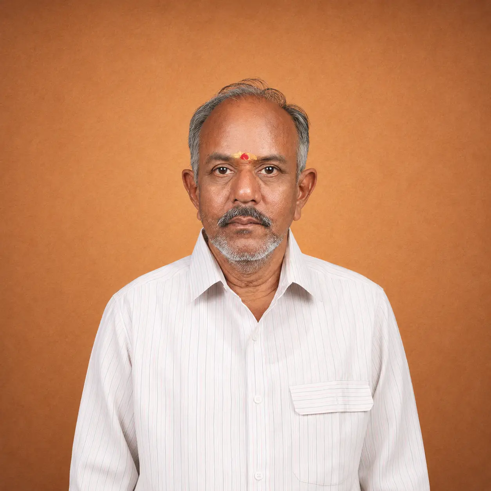
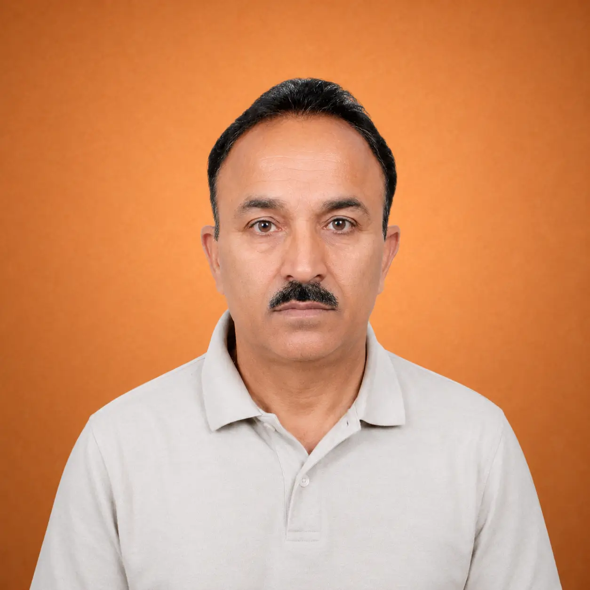
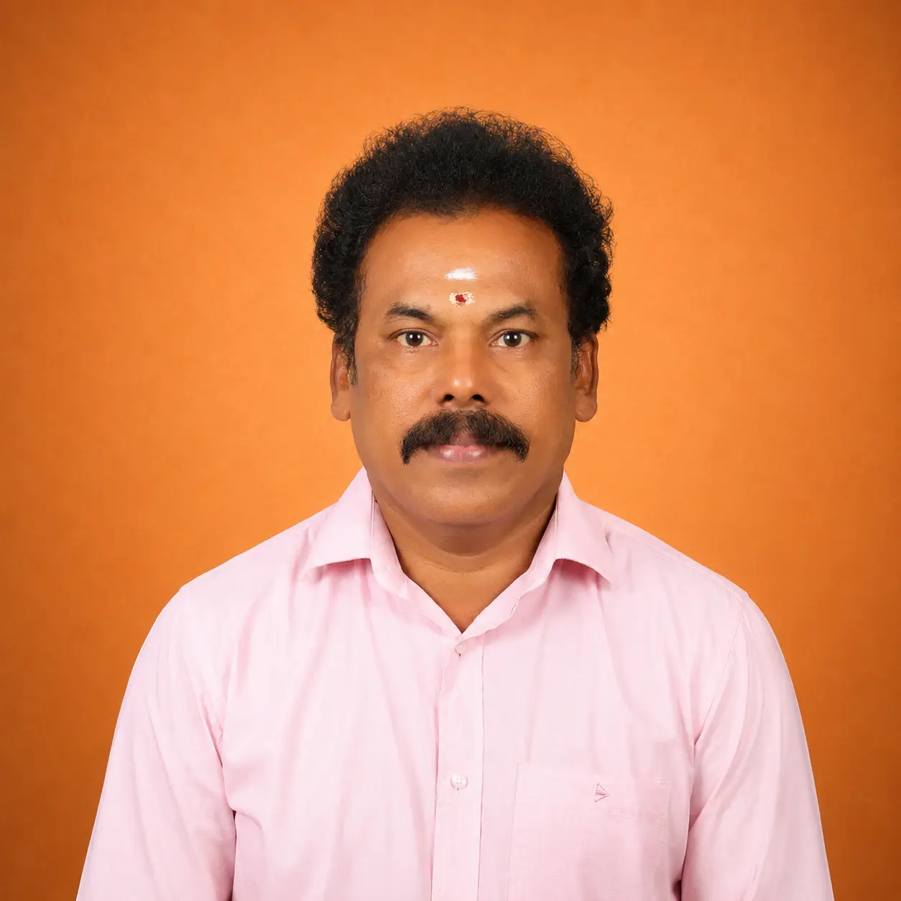
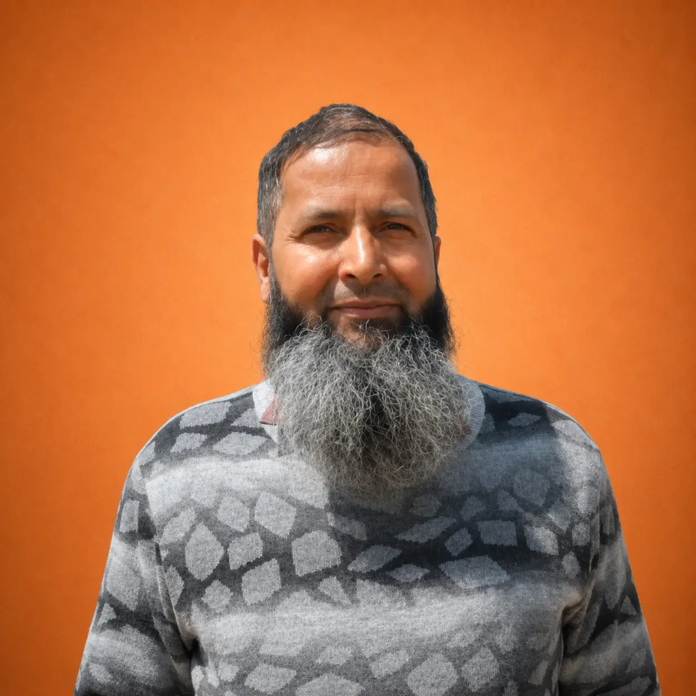
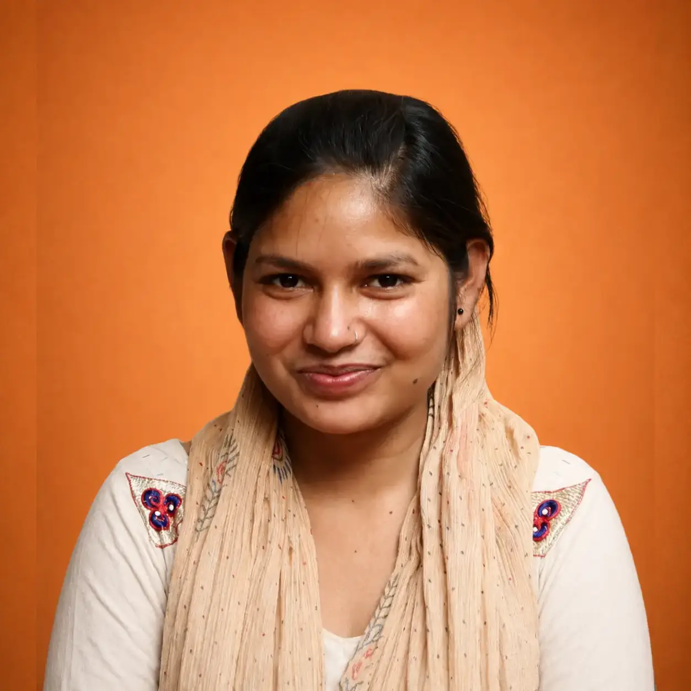
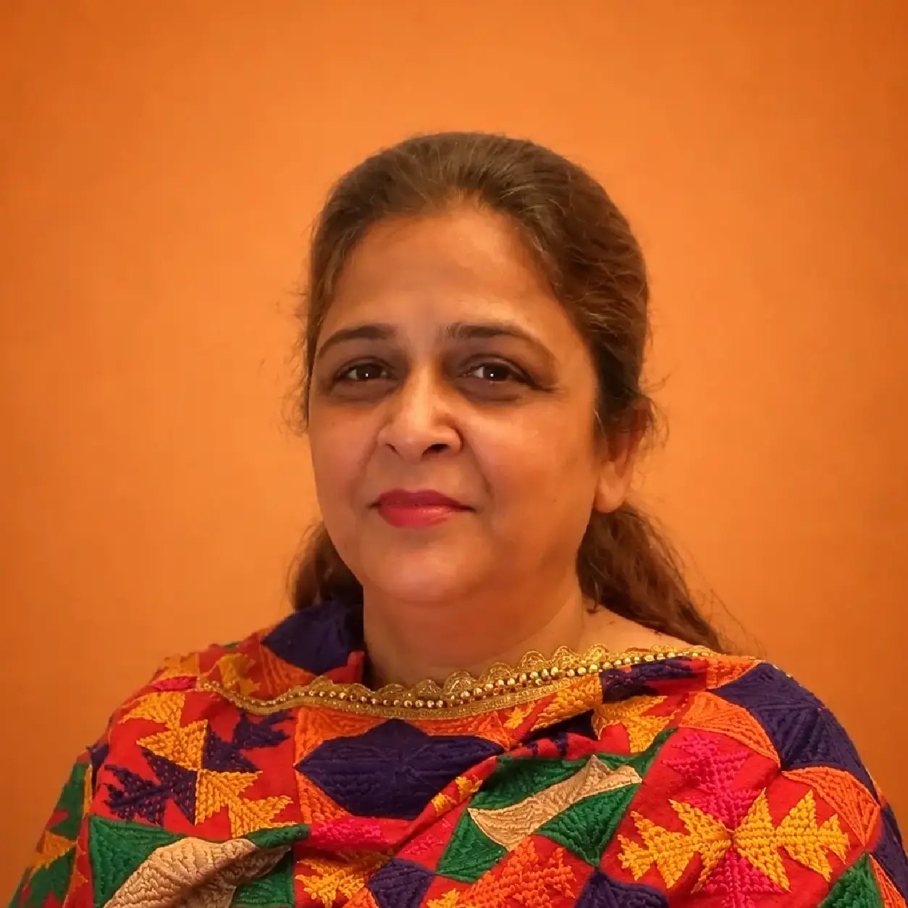

Celebrating craftspeople who have made exceptional contributions to India's living heritage and cultural economy.
The Kamala Awards honour outstanding artisans and individuals, whose work reflects excellence, dedication and significant contribution to India's craft traditions and communities.
The Crafts Council of India requests nominations to its KAMALA AWARDS 2025.
The Kamala Awards, instituted in 2000, recognize and celebrate artisans who have dedicated their lives to preserving and advancing traditional Indian crafts.
Kamala Samman honors a senior person who is dedicated to the cause of craft over a period of time. The work of these awardees should have significantly benefitted the community of craftspeople and transformed their lives. They have helped in setting up handloom co-operative societies that have made vast improvements in the social and working conditions of craftspeople.
The Kamala Award for Exceellence in Craftmanship recognises the high level of proficiency and skill achieved by a craftsperson as exhibited in a body of work done over the years. The award since its inception has been given to various craftspeople, some of the products being copper-coated bells, wooden puppets, leather puppetry, jute, bamboo and cane products, embroidery skills and wood and stone craft.
This award is given to craftspeople who have contributed to the handicraft sector through their work in the government service, to their community clusters, or for training and mentoning weavers, especially women. Artisans working with the communities involved in sholapith and metal craft. Puttapaka textile weaving, muga silk weaving, wooden block making, terracota pottery, garland making, bronze icons and Bhuta masks, were recognised and conferred the award over the years.
This award honours an artisan for proficiency in traditional handloom weaving. The award is instituted in the memory of late Smt. Shanta Prasad, senior member of CCI by her family.
The Crafts Council of India and other organisations confer the 'Young Artisan Award' which recognises the excellence of craft of young artisans who represent the face of India's future. This award carries a cash prize, a medal, an angavastram, citation and a certificate.
This award is instituted by Smt. Visalakshi Ramaswamy and recognizes and honours an artisan for his/ her effort to revive a languishing craft.
Recent Recipients

Weaving & Designing of Kanchipuram Sarees

Sozni Embroidery

Wood Craft

Handloom Weaving

Hand-Knotted Carpet Weaving

Phulkari Handwork
| Name | AWARD & CRAFT |
|---|---|
| Gajam Govardhana | KAMALA SAMMAN |
| Pushpa Kumari | Kamala Samman Excellence in Craft |
| Sundari Devi - Jaipur Rugs | Kamala Award for Excellence in Handloom Weaving |
| Sivaprasad Reddy K | Kamala Award for Contribution to Crafts |
| Yethin N | Kamala Award for Young Artisan |
| Santoshkumar Chitragar - CCK | Kamala Award for Revival of Languishing Craft |
| Name | AWARD & CRAFT |
|---|---|
| Shri. Khatri Nasrinbanu Gulamhusen | Excellence in Crafts |
| Shri. Jepar Bharat Verashi | Excellence in Handloom Weaving |
| Shri. Ramju Alimamad Kumbhar | Contribution to Crafts |
| Shri. Vankar Shamji Vishram | Contribution to Crafts |
| Shri. Khatri Abdul Jabar Mahmed | Contribution to Crafts |
| Shri. Khatri Fahd Gulamhusen | Young Artisan |
| Shri. Siju Ashwin Devji | Young Artisan |
| Shri. Vurugonda Odellu | Revival of Languishing Craft |
| Smt. Hemalatha Jain | Revival of Languishing Craft |
| Shri. Jyotindra Jain | Kamala Samman |
| Name | AWARD & CRAFT |
|---|---|
| Smt. Jaya Jaitly | Kamala Samman Award 2021 |
| Shri. M.Ramamurthy | Kamala Award for Excellence in Crafts 2021 |
| Shri. Vinod Kumar Shakya | Kamala Award for Excellence in Crafts 2021 |
| Shri. Marvada Devji Harji | Kamala Award for Excellence in Handloom Weaving 2021 |
| Shri. Banamali Mahapatra | Kamala Award for Contribution to Craft 2021 |
| Shri. Abdulrazak Mohmed Khatri | Kamala Award for Contribution to Craft 2021 |
| Shri. Sanjib Basak | Kamala Award for Creativity during Covid 2021 |
| Shri. Rakeshkumar Jitendrakumar Petigara | Kamala Award for the Revival of Languishing Craft 2021 |
| Shri. Abdulvahab Haidrali Khatri | Kamala Award for Young Artisan 2021 |
| Shri. Khatri Mohmad Rizwan Sidhik | Kamala Award for Young Artisan 2021 |
| Name | AWARD & CRAFT | State |
|---|---|---|
| Shri.L.Rathakrishnan Sthapathy | Excellence in the Craft of Traditional Bronze Casting Icons | Tamil Nadu |
| Shri. K.P. Vinod | Excellence in the Craft of Metalware | Kerala |
| Shri. Ali Mohammad Banka | Excellence in the Craft of Papier Machie | Jammu & Kashmir |
| Smt. Amrita Choudhary | Contribution to the Craft of Shibori, Tie & Dye | Rajasthan |
| Shri. Gaurang Shah | Kamala Award for Revival of Languishing Craft of Jamdani & Khadi Weaving | Telangana |
| Smt. Masto Devi | Kamala Award for Revival of Languishing Craft of Chamba Rumaal Embroidery | Himachal Pradesh |
| Shri. Vyasaraya Shettigar | Shanta Prasad Award for Excellence in Weaving (Udupi Cotton Saris) | Karnataka |
| Shri. Ishver Singh | Kamala Award for Young Artisan in the Craft of Miniature Pottery | Rajasthan |
| Shri. Satishbhai Chittara | Kamala Award for Young Artisan in the Craft of Mata-ni-pachedi (Kalamkari) | Gujarat |
| Kamala Samman 2020 - Contribution to the Craft Sector |